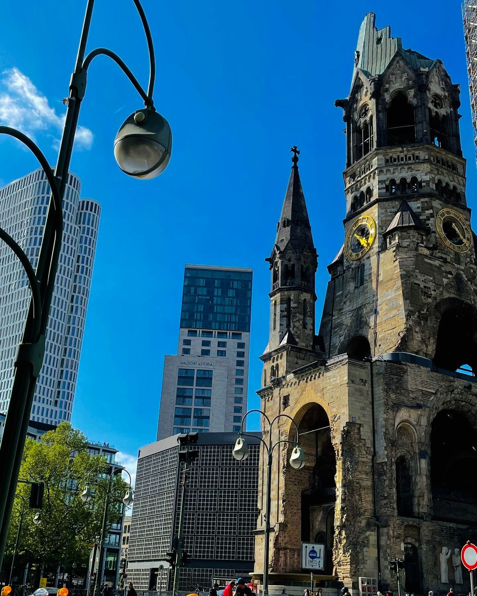

Viagens
Viajar é uma das atividades que mais gosto e mais sinto falta hoje em dia, principalmente porque tive e tenho a possibilidade de conhecer lugares diferentes. Tive experiências que jamais esquecerei e sei que ainda terei muitas coisas novas pra viver e criar novas lembranças nas próximas.